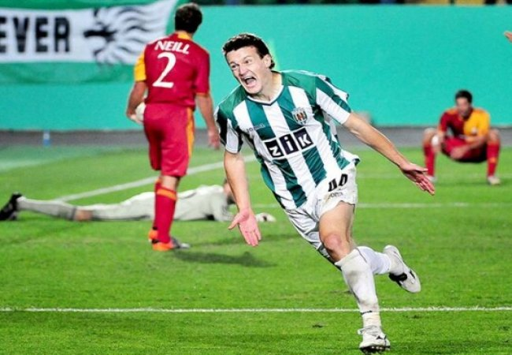

Забутий кубок Карпат: як леви здобули місце під сонцем
Львівські Карпати по-різному запам’ятались вболівальникам. Дехто захоплювався їх єврокубковим сезоном, хтось пам'ятає пониження в класі всередині "нульових", а інші стали свідками, як леви не змогли нормально перенести Covid-19 і впали аж до другої ліги. Проте цих людей об'єднує одне: якщо запитати їх "які трофеї є в арсеналі Карпат?", всі в один голос закричать "кубок радянського союзу, завойований в 1969-му". І дійсно, львів'яни тоді виграли кубок СРСР. До речі, вони єдині, хто здобув трофей, будучи не представником вищої ліги. Однак мало хто знає, що Карпати завоювали ще один кубок -
товариський, але кубки не пахнуть.
У сезоні 2010/11 після єврокубкової осені, де львів'яни набрали всього одне очко, але дуже гідно зіграли проти фаворитів групи, потрібно було підіймати бойовий дух на міжнародній арені. Copa del Sol - чудова нагода порадувати вболівальників не простими спарингами, а ще й поборотися за кубок.
Погодьтеся, азарт в рази більший.
Copa del Sol, що перекладається з іспанської як Кубок Сонця, проводився в Іспанії у зимовий період часу. До речі, цього трофею немає в Реала і Барси, але є в Карпат. Кубок розігрувався з 2010-го по 2013-ий рік, брати участь і змагатися за перемогу у розіграші приїжджали клуби з Норвегії, України, Швеції, Польщі, Данії й ще декількох країн. Організаторами були норвезька та шведська компанії. У 2010-му статус чемпіона турніру присудили двом командам: Шахтарю і цска.
А у 2011-му на Кубок Сонця прилетіли львівські Карпати.
Боротьбу за турнір підопічні Кононова розпочали 28-го лютого 2011-го року, тоді на стадії 1/8 Карпати зіграли з Мольде.
Перед матчем наставник зелено-білих навіть не пропустив крізь себе думку, що ще товариський турнір, йому була потрібна тільки перемога:
«Будь-яка перемога, а тим більше в іграх такого доволі престижного турніру, завжди додає впевненості у своїх силах. А психологія переможця – важлива складова сучасного футболіста. Навантаження будуть чималі. Але по-іншому на цьому етапі підготовки не можна. Навіть у дні матчів, якщо їх початок буде призначено на вечірній час, в першій половині дня будемо проводити тренування.
Але, коли грати будемо в обідню пору, занять того дня не буде»

Мольдe львів'яни пройшли, але було нелегко. На 24-й хвилині зустрічі Кожанов забив з пенальті, через декілька хвилин норвежці зрівняли рахунок. Матч дійшов до серії одинадцятиметрових ударів, де Карпати не помилялися, натомість це робив суперник, що зробив послугу левам і пропустив їх до 1/4. Через 3 дні на тому ж стадіоні - Ла Манга, Карпати боролися за вихід у півфінал з Гютенборгом. Зелено-білі перемогли 0:1, єдиний гол у матчі забив Сергій Кузнєцов замкнувши простріл партнера, чим і розчистив шлях до наступної стадії. Карпати потроху почали вважатися фаворитами турніру, але присутність Шахтаря, який теж полює на кубок, трохи бентежила львів’ян. У півфіналі Карпати знову закінчили основний час в нічию і перевели матч у серію пенальті. У першому таймі Голодюк відкрив рахунок, а в другій половині зустрічі Олессун зрівняв. Цікаво, що Карпати повинні були грати проти Копенгагена, але данці відмовилися від участі в півфіналі, і їх замінили норвежці. У лотереї львів’яни знову не хибили, ніби на тренуваннях пробивають тільки пенальті, тут може позаздрити тільки збірна Англії. Карпати забили всі 7 ударів з позначки, а от Олесунн не витримав напруги й пропустив левів до фіналу. Там на них чекав донецький Шахтар, який в півфіналі розгромив Русенборг,
і був готовий захистити трофей, але була одна проблема.
В день фіналу 7 лютого гравці Шахтаря повинні були покинути розташування команди та приєднатися до збірних. В Карпатах також були збірники, але не в такій кількості. Гірники звернулися з проханням перенести матч з понеділка на неділю. Вони поставили ультиматум, що якщо не перенесуть, то фіналу не буде.
Матч все ж відбувся в запланований термін, але без збірників.
Офіційно на гру прийшло 250 глядачів. Коли на матч приходить така мала кількість глядачів, складається враження, що команди грають для тебе. Карпати сміливо почали, але першими могли забити гірники. Вже на початку львів’ян врятувала стійка, згодом вона ж знову завадила донеччанам забити гол. Наприкінці першого тайму вже Карпати влучили в каркас воріт, але попри низку гольових моментів в обох команд, рахунок на табло після першого тайму був сухий. В другій половині матчу, після того, як Шахтар відчайдушно спробував піти в наступ, Карпати знову перехопили ініціативу. Вони почали більше пробивати по воротах і один з таких ударів завершився голом у виконанні львів’ян: Худоб’як майстерно пробив у дальній кут і побіг святкувати з партнерами. Шахтар спробував відквитати цей гол, але Карпати вистояли та зуміли довести матч до переможного. Таким чином, вперше з 1969 року капітан левів тримав у руках справжній кубок,
який у Львові сприйняли дуже серйозно.
Призових за турнір, а це 200 тисяч євро, вистачило тільки на повернення додому, а там на них чекала дуже тепла зустріч.
Попри те, що Леви привезли до Львова Кубок Сонця, вболівальники вручили їм ще один – Кубок-Подяки. .
«Наша команда здобула перший трофей у 2011 році. Тож ми вирішили на знак подяки від фанатів 15-го і 16 секторів, а також решти вболівальників вручити команді свій кубок. Він, щоправда, не з золота і навіть не зі срібла, але в ньому частинка серця кожного з нас. Скажу на майбутнє, що до кожного трофею, який «Карпати» будуть здобувати, ми будемо виготовляти ще й кубок від фанатів. Сподіваємося, що робити це нам доведеться часто», –
сказав вболівальник Карпат Ангел.
Головний тренер Ігор Кононов не сподівався, що буде таке гучне святкування, напевне дуже здивувався салюту: «Я зворушений і, відверто кажучи, здогадувався, що нас будуть зустрічати в аеропорту. Але не сподівався, що це буде аж настільки… У мене немає слів і я вам всім дуже вдячний.
Виграш «Кубка Сонця» – це наша спільна з вами перемога і ми її здобули для вас, наших найвідданіших вболівальників»
Карпати були готові їхати захищати трофей наступного року. Організатори сказали, що точно запросять львів'ян наступної зими, оскільки вони є чинними чемпіонами, але в списку учасників на Кубок Сонця-2012 карпатівці знайти себе не змогли.
Напевне, десь в офісах Норвегії та Швеції боялись, що кубок знову дістанеться Львову.
Андрій Павлечко